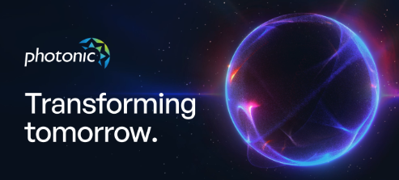

The Future of Faster, Greener Computers
Today’s computers are reaching their limits in speed and efficiency. Photonic computing and optical chips offer a new way forward by using light instead of electricity. This could make computers much faster and use less energy, transforming industries worldwide.
Photonic computing has the potential to revolutionize technology with faster and more efficient processing. While challenges exist, ongoing research is pushing boundaries daily—bringing us closer to the era of light-powered computers.